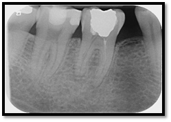
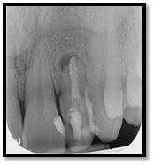
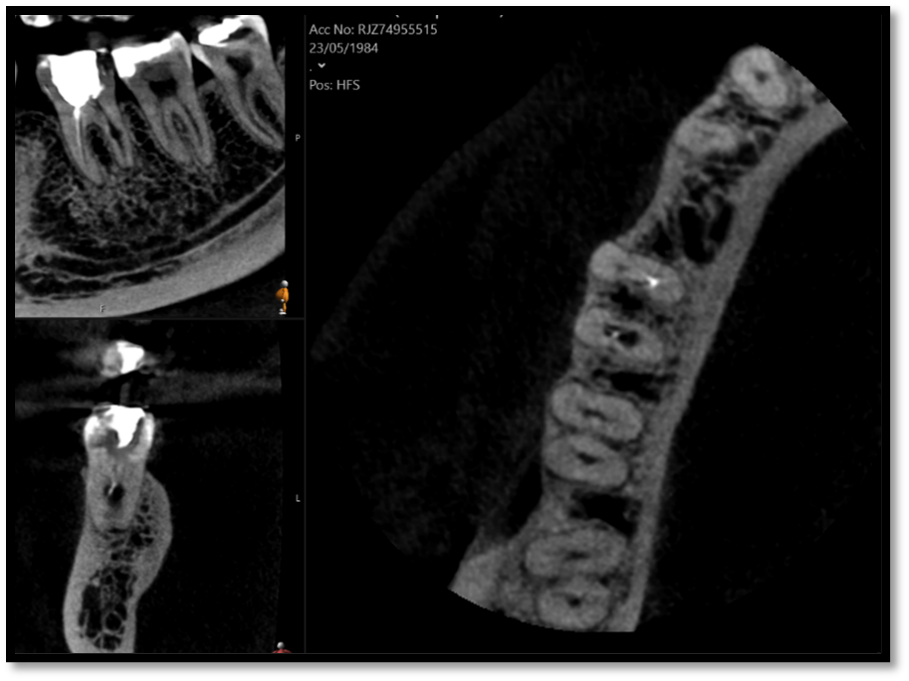
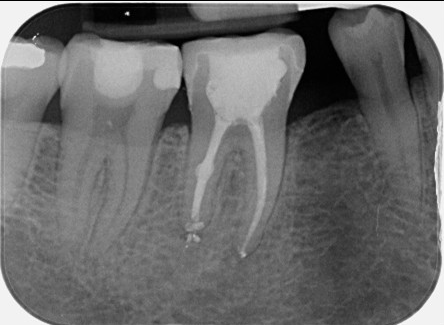
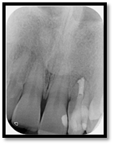

Clinical Case Studies
View our comprehensive collection of endodontic treatment outcomes and procedures
Clinical Content Advisory
The clinical images below are intended for dental professionals to illustrate treatment procedures and outcomes.
Some viewers may find these images disturbing. Caution is advised.
UL2: Root canal retreatment of open apex
LR6: Root canal retreatment & internal root resorption management and cuspal coverage





Post Removal

12-Month Healing

Dental trauma management
Pre-operative photo and X-ray


6 month review


Surgical management of external cervical resorption lesion
Pre-op X-ray


Procedure Photos


Fractured file removal and re-rct

Pre-op

Retrieved file

12 month review
Root canal retreatment and bypass of separated instrument

Pre-op

12 month review demonstrating healing
Molar apicectomy

Pre-op

Removed granulation tissue

Review radiograph demonstrating healing
UL6 Internal inflammatory resorption perforating palatal root. Repaired with MTA.


12 month review (crown carried out by GDP)
Internal resorption management


Open/Immature apex management and internal whitening
Pre-op


Procedure Photos


Multi-disciplinary: root canal treatment, molar apicectomy and bone regeneration
Pre-operative X-ray

Post-operative X-ray

Molar endodontics
Pre-operative


Post-operative